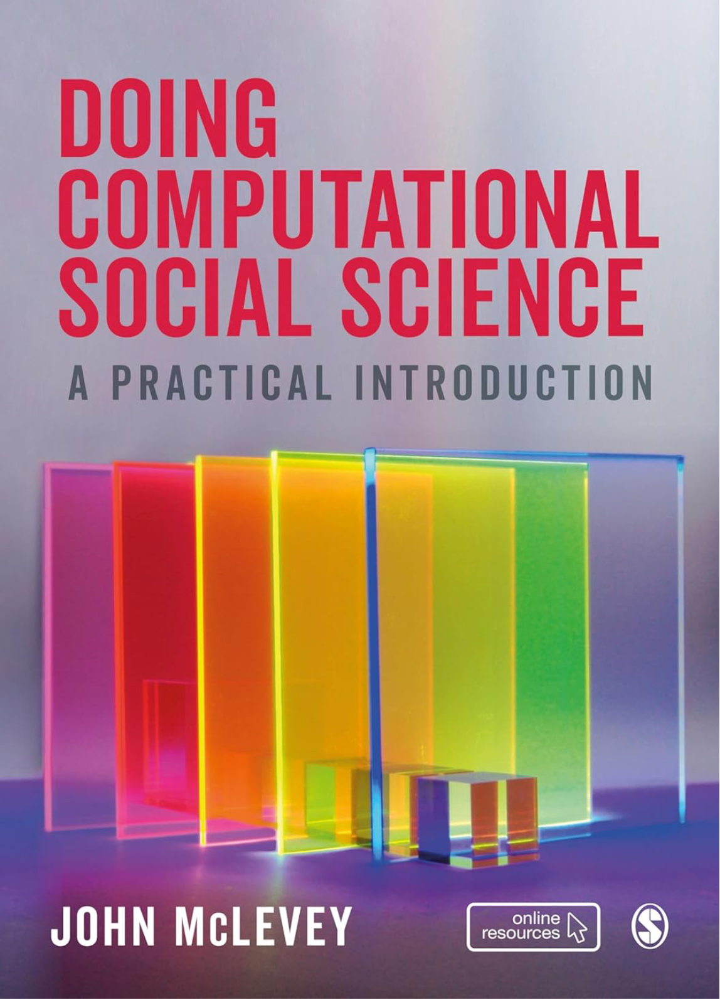

Research
My research spans computational social science, network science, cultural cognition and affect, and quantitative methodology, with substantive work in political sociology, sociology of science, and environmental social science.
Books
The Sage Handbook of Social Network Analysis
Co-edited with John Scott and Peter J. Carrington. A comprehensive reference on the theory, methods, and applications of social network analysis.

Doing Computational Social Science: A Practical Introduction
A practical, hands-on introduction to the concepts, tools, and workflows of contemporary computational social science.

The Face-to-Face Principle: Science, Trust, Democracy and the Internet
On the role of face-to-face communication in science, trust, and democratic life — and what changes when interaction moves online.

Industrial Development and Eco-Tourisms: Can Oil Extraction and Nature Conservation Co-Exist?
A comparative study of how oil extraction and nature-based tourism coexist — and conflict — across coastal regions.
Selected articles
Full publication list available in my CV.